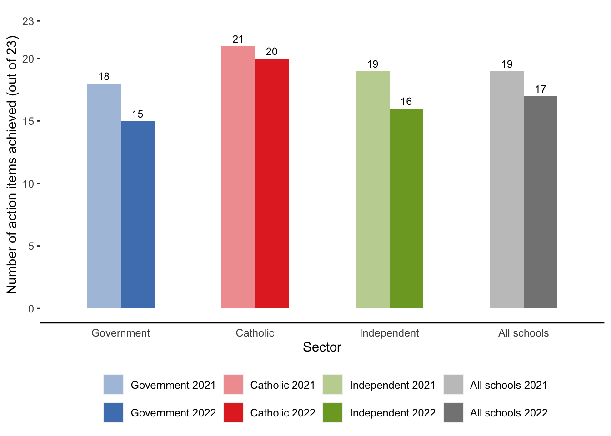
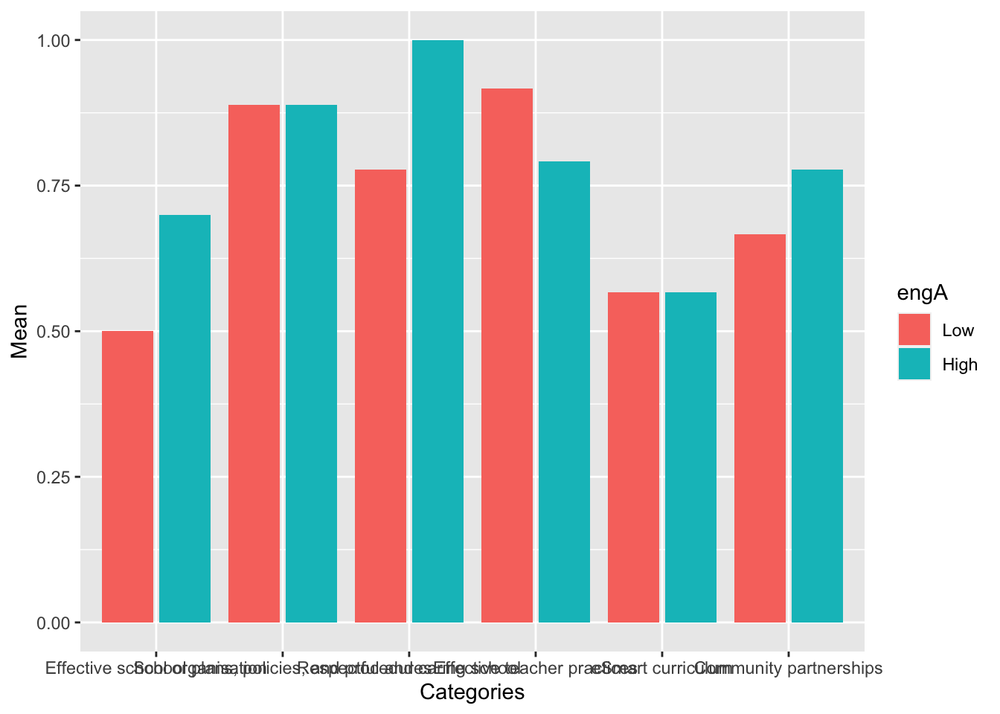
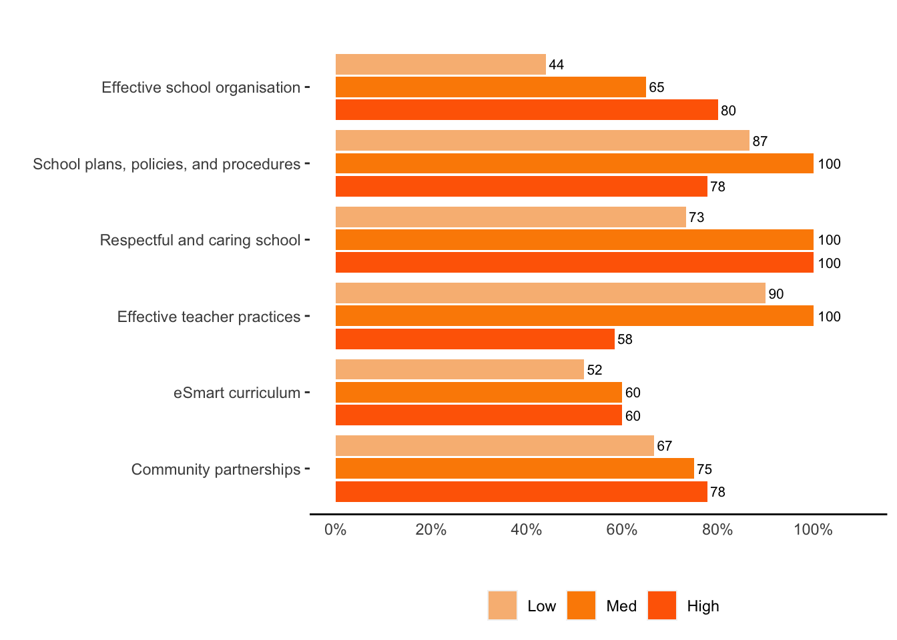
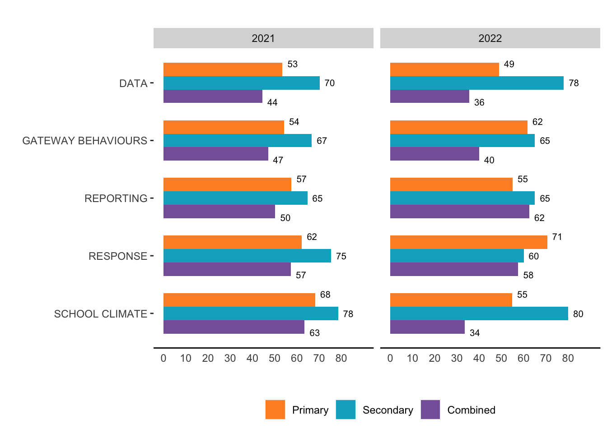
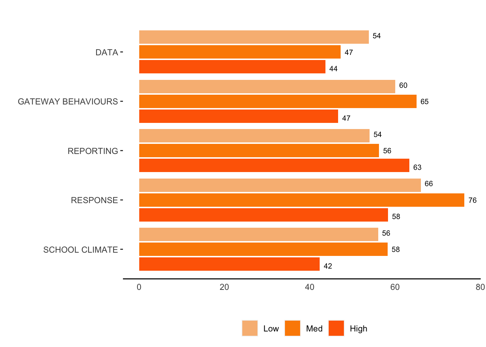
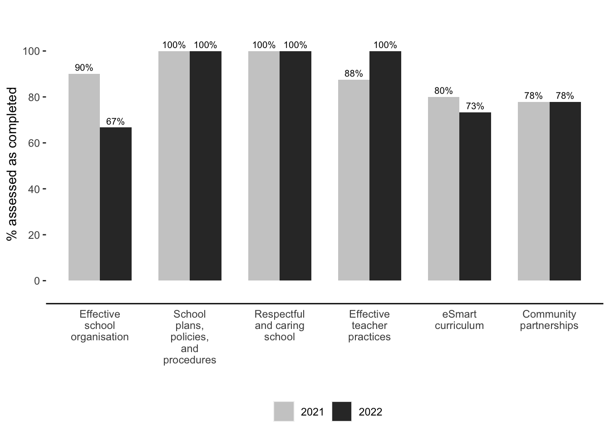

Demographics of schools participating in the self-assessment tool: 2021 & 2022
Notes:
**This is automated, so next time you do this report you just need to swap (=rename) the data file. If a different set of questions is used next time, this can be easily updated in the data dictionary file (data_dic.csv).*
*Also the text generation can be automated, so if you usually includes the same statistics in the description, these numbers can be drawn directly from data and inserted automatically, so you will just need to review the text**
In the 2022 evaluation, as in the 2021 evaluation, a majority of the participant were government schools. In 2022, 7 of the 12 participating schools were government schools, 4 were Catholic schools, and just 1 was an Independent school.
Chart notes:
• The font on all of the pie charts is very small – probably too small for readers to make out. Is it possible to enlarge – similar to the 2021 report? NOTE that if this takes much time, just leave as is.
I changed the font on Charts to Times New Romans, 14 - this can be adjusted easily, please confirm
• I had originally asked for percentages to one decimal point, but given that there are now 0s for each data point, just leave them as whole numbers. So – 33% (rather than 33.0%)
I changed this to integer with proper rounding
- It would also be nice if the legend and the pie pieces matched up, as they do in the 2021 report. So if Government is the first category listed in the legend, reading left to right, the Government pie piece is also on the left. NOTE: if this takes too much time, just leave as is.*
done - all pie charts are completely the same orientation as in the 2021 report, including the order of colours on the pie sections.
Participants profile
2021
2022
Figure 1. Participants by school sector
Similar to 2021, in 2022 a large majority of participating schools were primary schools. In the 2022 evaluation, 9 of the 12 participating schools were Primary schools, with 2 combined schools and 1 secondary school. In the 2021 evaluation, more secondary schools than combined schools participated.
2021
2022
[1] NA NA NAFigure 2. Participants by school type
In both 2021 and 2022, approximately 2/3rds of participating schools were high-SES schools, with the rest approximately evenly divided between medium and low-SES schools. In 2022, 8 of the 12 participating schools were high SES schools, 2 were medium SES schools, and 2 were low SES schools.
2021
2022
Figure 3. Participants by SES
As in 2021, in 2022 a large majority of participating schools were above average on the Australian Digital Inclusion Index. In 2022, 9 of the 12 participating schools were above average on the ADII, with 2 below average and 1 with an unknown ADII score.
2021
2022
Figure 4. Participants by ADII
The percentage of metropolitan schools participating in the evaluation increased in 2022, with 9 of the 12 participating schools located in metropolitan areas, and 3 located in non-metropolitan areas.
2021
2022
Figure 5. Participants by location: metro / non-metro
In 2022, schools were asked to respond to two sets of questions about their level of engagement with the eSmart Framework and eSmart Advisors. The Engagement A scale consisted of five questions about the frequency with which the schools engaged, with seven response options from “weekly” to “once a year” and “never”. The Engagement B scale consisted of six yes/no questions that asked whether the school had engaged with a variety of people, resources, and events. Schools were considered to have scored “High” on Engagement A if they scored 16 or more out of a total possible score of 35 and “Low” if they scored less than 16. Schools were considered to have scored “High” on Engagement B if they answered “yes” to 3 or more of the 6 questions; “Medium” if they answered “yes” to 1 or 2 of the 6 questions, and “Low” if they did not answer “yes” to any of the 6 questions.
Six of the 12 participating schools were characterised as having high engagement on the Engagement A scale and six were characterised as having low engagement. On the Engagement B scale, three schools were characterised as having high engagement, four as having a medium level of engagement, and five as having low engagement.
Could you change these to a different colour, as these are the colours used for schools sector. How about light and dark green for Engagement A and light and dark orange for Engagement B? done
by Sector 2022 - Engagement B data 2022
done. Colours are set up at the global level and are linked to specific questions, so any new dataset will also have the same colour way for its charts. In case colours need to be adjusted - it is easily done at the global level
Appendix X includes a copy of the 2022 SAT.
Results
The quantitative results are presented in two sections. The first section provides results for all schools that completed the SAT in 2021 and/or 2022. This includes the 45 schools that completed Part A in 2021, the 36 schools that completed Part B in 2022, and the 12 schools that completed both Part A and Part B in 2022.
The second section provides results for the six schools that completed the SAT in both 2021 and 2022, in order to examine change over time. Given this small number, results are not broken down by demographics such as school sector or SES.
Quantitative results: All schools 2021 and 2022
This next section of the report provides results for all schools that completed the SAT in 2021 and/or 2022. In interpreting these results, the small sample size in 2022 (N=12) must be kept in mind, including the fact that only one Independent school participated.
Part A Results
For all participant schools, the median number of action items achieved across the six domains was slightly lower in 2022 than in 2021 – 17 vs. 19 out of a total score of 23. As in 2021, Catholic schools reported the highest average score (20), followed by Independent schools (17) and government schools (15).
*Note: *
Need a chart here that combines 2021 and 2022 into a single chart – so bars for 2021 and 2022 are next to each other for Total and by sector (similar to the grey chart 3 charts below this one) – with lighter blue for 2021 govt and this blue for 2022 govt; lighter red for 2021 Catholic and this red for 2022 Catholic; lighter green for 2021 Independent and this green for 2022 Independent; lighter grey for 2021 All schools and this grey for 2022 All schools. Below is from 2021 only, for reference.
Done

2022: Part A: number of eSmart action items achieved (out of 23) by sector)

The spread of resonses by schools was similar in 2022 and 2021, ranging from a low of 10 (2022) or 11 (2021) to a high of 23 (both years). Although patterns are more difficult to discern in 2022 with the small sample size, it appears that, similar to the results in 2021, government schools tended to report that they had achieved fewer action items than did Catholic schools.
*Note*:
remove last parenthesis at end of titles Note: Is it possible to be able to paste in the charts without the titles? If that’s a pain, just leave as is.
titles were removed from this section onwards. Each chart includes a text title to avoid confusion
2021 Part A: number of eSmart action items achieved (out of 23) by sector
2022 Part A: number of eSmart action items achieved (out of 23) by sector
The percentage achievement within each Domain for all schools that completed the SAT in 2021 or 2022 is presented below. In general, levels of achievement were slightly lower in 2022 than in 2021. As in 2021, highest scores in 2022 were for School plans, policies, and procedures, and A respectful and caring school community. The largest drop between 2021 and 2022 was in Effective school organisation. It is possible that COVID had a particularly negative impact on this Domain.
*Note*:
title is cut off
Fixed
Part A: average (mean) completion of eSmart action items - all schools by Domain
2021/2022 - Figure 10. Part A: average (mean) completion of eSmart action items - all schools by Domain
Examining these results by school sector, we see similar patterns in 2022 and 2021, with the Government schools tending to report lower achievement than the Catholic schools. In 2022, only one Independent school participated.
*Note*:
Title is cut off
Consistency with how categories are displayed. In this chart, each category is two or three lines; in the next chart, each is a single line. I think single line is easier to read.
Done
Part A: average (mean) completion of eSmart action items by Domain by sector
Although it appears that in 2022, similar to 2021, secondary schools tended to report higher achievement than the other types of schools, it must be remembered that only one secondary school participated in 2022.
Title is cut off Fixed
Part A: Average (mean) completion by Domain by Type

An examination of results by SES shows no consistent patterns in 2022, similar to 2021, with low SES schools often reporting as much or more successful achievement on each Domain as high SES schools.
In 2022, high SES schools scored relatively highly on the Effective school organisation Domain, medium SES schools on the eSmart Curriculum Domain, and low SES schools on the Respectful and caring school Domain (along with medium SES schools). Low SES schools reported low scores on the Effective school organisation Domain (along with medium SES schools) and on the eSmart curriculum Domain.
Title is cut off Done
Text here xxxxxxxxxxxxxxxxxxxxxxxxxxxxxxxxxxxxxxxxxxxxxxxxxxxxxxxxxxxxxxxxxxx
Title cut off There are 3 bars in 2022(?). Please exclude missing data from analysis
done
Part A: Average (mean) completion by Domain by ADII
In 2022, as in 2021, no consistent pattern emerged by location, with metropolitan schools reporting higher achievement than non-metropolitan schools on some Domains and lower achievement on others. Non-metropolitan schools reported particularly low achievement on the Domains, Effective school organisation (27%) and Community partnerships (56%), and metropolitan schools reported low achievement on the Domain, eSmart curriculum (51%).
Title cut off done
Part A: Average (mean) completion by Domain by Metro
Then, in Part A, results broken down by High and Low Engagement A, and High, Medium, and Low Engagement B.
And similarly for Part B.
In other words, just repeat what you did for, say, SES, but replace with Engagement A (High, Low) and Engagement B (High, Medium, Low).
Chart by Engagement A – 2022 here
Chart by Engagement B – 2022 here


Part B Results
Results by Focus Area differed somewhat in 2022 compared to 2021. In 2022, the School Climate domain dropped from highest score to second-lowest score. This result may be due to the impact of COVID and associated school closures and switch to on-line learning. It may also be due simply to the small sample size in 2022. The highest score in 2022 was for the Response Focus Area. In both years, the Data domain was lowest or equal lowest.
Remove the “2” from start of title I would like to be able to insert title separately from chart if possible. If this is too difficult, just leave as is. done
Part B: results by Focus Area - all schools
Unlike 2021, in which government schools tended to report that they were slightly better placed than Catholic and Independent schools to prevent and respond to anti-social activities, no consistent pattern emerged in 2022.
Can you check the rounding for the data in all of these bar charts? For example, in this chart, the average (mean) for Catholic schools – Response Domain is 72.5, so should be rounded to 73; but this chart says 72.
done. It was a special case of rounding: for rounding off a 5, the IEC 60559 standard (see also ‘IEEE 754’) is expected to be used, ‘go to the even digit’.
As in 2021, secondary schools generally reported higher scores on the Part B SAT than did either primary schools or combined schools. This was particularly true for the Focus Areas, Data and School Climate.
Results by SES are shown below. Similar to the results from Part A, there is no clear pattern in scores in either 2021 or 2022, with low SES schools reporting similar or better results than high SES schools across the five Focus Areas.
2021/2022: Part B: results by Focus Area by SES
Part B: results by Focus Area by school type

Similar to results by SES, there is also no clear pattern of scores across Domains by ADII, with those below average on the ADII sometimes scoring lower than, and other times scoring higher than, above average ADII schools. In both years, however, below average ADII schools scored lower on the Data Focus Area as compared with above average ADII schools, and particularly in 2022. In 2022, below average ADII schools scored higher on the Response Domain as compared with above average ADII schools.
Part B: results by Focus Area by ADII
Similarly, there was no clear pattern in scores by metropolitan or non-metropolitan location. In 2022, non-metropolitan schools scored slightly higher on the Response Focus Area as compared with metropolitan schools, and metropolitan schools scored slightly higher on the Data and Response Focus Areas.
Part B: results by Focus Area by metro
Examining results by levels of engagement, ….
[Chart for Engagement A – 2022 here] [Chart for Engagement B – 2022 here]

Overall progress (total score by quartile)
Based on the total score in Part B, schools can be assigned to one of four categories that represents where they currently sit in the eSmart Schools journey: Starting (quartile 1), Emerging (quartile 2), Building (quartile 3), or Flourishing (quartile 4). Such a designation can assist both the Foundation and schools to easily compare overall results across years – to understand where they currently sit and the progress they have made since their last self-assessment.
The four quartiles can also be used by the Foundation as a benchmarking exercise with schools – for example, to demonstrate to each school where it sits overall as compared with other schools from the same sector, SES or ADII status, or metropolitan or non-metropolitan area.
In the 2022 evaluation, six of the participating schools can be classified as Building (quartile 3) and six can be classified as Flourishing (quartile 4).
Y-axis: include ’20’ Include null result for Starting
Figure 17. Part B: progress in eSmart journey - all schools
2021 and 2022
Schools’ perceptions of performance
Schools were asked, using a 10-point scale, to assess their preparedness for and responsiveness to an event or situation negatively affecting their school both before and after listening to the audio scenario and answering the Part B section of the SAT. These questions were included twice to understand if schools’ views would be impacted by their responses to the specific statements across the five Focus Areas; in other words – whether schools either overestimated or underestimated the extent to which their school is prepared to prevent and respond to disruptive events.
As can be seen from the figures below, schools were more likely to underestimate their preparedness and responsiveness than to overestimate them, both in 2021 but, even more so, in 2022. In 2022, eight of the participating schools reported a higher score after completing the Part B questions than prior when asked about preparedness, whereas none of the schools reported a lower score. In response to the question about responsiveness, seven of the schools reported a higher score after completing the Part B questions than prior, with just one school reporting a lower score.
Font is very small – difficult to read
We’ll need to differentiate between the two questions and between the two years. Could you please make the first chart (upper left) lighter shades of blue and the third chart (bottom left) darker shades of blue; and then the second chart (upper right) lighter shades of green and the fourth chart (bottom right) darker shades of green?
can you please confirm colours referring to item numbers?
Note that in the link, there are a total of 6 of these charts – 3 for 2021 and 3 for 2022 – with different data. Which are correct?`
Please exclude from analysis any schools that did not answer both the pre- and post questions.
Same issue with other pie charts – if “No change” comes first in the legend, the “No Change” pie piece should be on the left, for each of comprehension.
2021: Items 13.1 and 19.1
2021: Items 13.2 and 19.2
2022: Items 13.1 and 19.1
2022: Items 13.2 and 19.2
Part A Results
On average, these schools reported decreases from 2021 to 2022 in the Part A Domains, Effective school organisation and eSmart Curriculum, but an increase in the Domain, Effective teacher practices. They reported the same level of achievement for the Domains, Respectful and caring school; School plans, policies, and procedures; and Community partnerships.
In 2022, these school reported 100% achievement in the Domains, Effective teacher practices; Respectful and caring school; and School plans, politics, and procedures. The lowest achievement was in the Domain, Effective school organisation. This was also the Domain with the largest drop in achievement from 2021.
Title cut off
Please correct category order (from left to right): Effective school organisation; School plans, policies, and procedures; Respectful and caring school; Effective teacher practices; eSmart curriculum; Community partnerships Please adjust the 100%s so they don’t overlap
2021/2022: Completed both years - Part A: average (mean) completion of eSmart action items - all schools by Domain)

Part B: results by Focus Area - SAME schools
The third I was hoping you could produce is identical to Fig 17 (but with 2021 and 2022 results combined into a single chart, as specified in my previous email) - but just for those six schools - 2021 vs. 2022